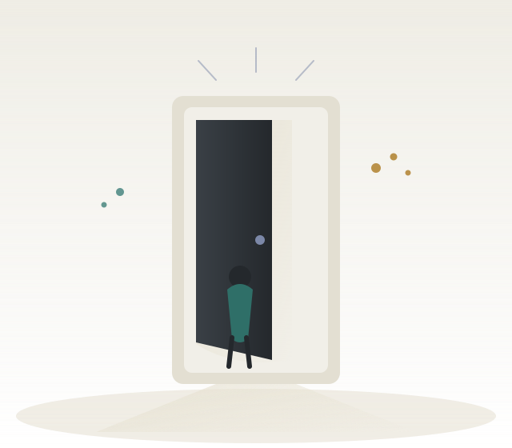

Cẩm nang làm việc cùng
Một tài liệu để hiểu tôi nhanh hơn — cách tôi nghĩ, cách tôi làm việc, và cách chúng ta có thể phối hợp tốt hơn ngay từ đầu.
Hình 1 — chân dung được ghép từ nhiều "lớp trải nghiệm" (nghiên cứu, công nghệ, giáo dục, cộng đồng) cùng hội tụ và kết nối với nhau — hình dung cho cách tôi được hình thành qua nhiều vai trò khác nhau.
01 · Thông tin chung
| Họ và tên | Nguyễn Văn Quang |
| Ngày sinh | 01/01/2004 |
| Nền tảng | Hệ thống Thông tin Quản lý (MIS) |
| Đã trải nghiệm | Business Analysis, ERP, nghiên cứu, công nghệ, giáo dục và hoạt động cộng đồng |
Trong những năm qua, tôi đã đi qua khá nhiều vai trò và trải nghiệm khác nhau, từ học tập, nghiên cứu, công nghệ, Business Analysis, ERP đến các hoạt động cộng đồng.
Tôi chưa xem mình là người đã sớm xác định được một con đường duy nhất. Thay vào đó, mỗi trải nghiệm đều giúp tôi hiểu thêm về bản thân: mình làm tốt điều gì, quan tâm đến điều gì và muốn dành thời gian cho điều gì trong tương lai.
02 · Điểm mạnh
Tôi không thích chỉ biết một thứ ở mức "làm được". Khi gặp vấn đề mình thực sự quan tâm, tôi thường muốn hiểu sâu hơn:
Tôi đã nhiều lần tiếp cận những lĩnh vực ban đầu chưa có nhiều kiến thức hay kinh nghiệm. Cách tôi thường học:
Tôi tin rằng khi cần thiết, tôi có khả năng tự tìm kiếm thông tin, học kiến thức mới và từng bước xây dựng sự hiểu biết của mình.
02 · Điểm mạnh
Trước một lượng thông tin lớn hoặc rời rạc, tôi thường muốn sắp xếp lại:
Tôi lắng nghe để hiểu trước khi đưa ra ý kiến, và luôn cố xác định:
Tôi sẵn sàng thay đổi quan điểm nếu có lập luận thuyết phục hơn.
03 · Điểm yếu
Tôi có xu hướng muốn hiểu khá kỹ trước khi hành động — điều này giúp tôi tránh kết luận quá sớm, nhưng đôi khi cũng khiến tôi phân tích lâu hơn mức thực sự cần thiết.
Điều tôi vẫn đang học là phân biệt giữa:
Đôi khi, một quyết định tốt được đưa ra đúng thời điểm sẽ có giá trị hơn một quyết định hoàn hảo nhưng đến quá muộn.
04 · Phong cách & nguyên tắc làm việc
Tôi làm tốt hơn khi hiểu vấn đề đang giải quyết, mục tiêu thực sự, và kết quả tốt được đánh giá thế nào — không cần hướng dẫn từng bước.
Trước khi bắt đầu, tôi muốn xác định mục tiêu, ưu tiên, deadline, nguồn lực. Kế hoạch không cố định — sẵn sàng điều chỉnh khi có thông tin mới.
Không đánh giá hiệu quả qua việc "trông có vẻ bận". Nếu một cách làm không hiệu quả, tôi sẵn sàng thay đổi thay vì giữ nguyên vì thói quen.
05 · Môi trường làm việc tôi yêu thích
Tôi không ngại yêu cầu cao hay vấn đề khó — mọi người sẽ làm việc hiệu quả hơn khi hiểu rõ mình đang hướng đến điều gì.
06 · Cách để giao tiếp với tôi
Thay vì "cái này chưa tốt", tôi dễ cải thiện hơn nếu biết: phần nào chưa đạt, chưa đạt ở điểm nào, tiêu chuẩn mong muốn là gì, nên điều chỉnh theo hướng nào.
Tôi không xem phản hồi công việc là công kích cá nhân — tôi muốn tập trung vào vấn đề, nguyên nhân và giải pháp.
07 · Thời gian làm việc & quan điểm về OT
Tôi có thể làm việc trong giờ hành chính, và duy trì thời gian biểu tương đối cố định. Nếu được báo trước, tôi có thể chủ động điều chỉnh để hỗ trợ khi cần.
Tôi cho rằng cần nhìn lại nguyên nhân: hệ thống vận hành, quy trình, phân bổ nguồn lực, cách lập kế hoạch — hoặc mục tiêu đang vượt quá nguồn lực hiện có.
Ưu tiên của tôi là một phương án win-win. Trong thời điểm công ty thực sự cần, tôi cũng sẵn sàng chọn phương án win cho công ty.
08 · Điều tôi mong chờ ở người làm việc cùng
09 · Ngoài công việc
Đặc biệt là hoạt động tạo cơ hội học tập, kết nối và phát triển cho người khác — một phần lý do tôi xây dựng và phát triển TechTonic.
Không chỉ quan tâm một công nghệ mới "có gì hay", mà còn suy nghĩ nó thực sự có thể giải quyết vấn đề gì.
Tại sao có người học nhanh, người khác gặp khó khăn? Làm sao duy trì việc học lâu dài và giúp người học chủ động hơn?
Mình muốn trở thành người thế nào, và điều đang làm hôm nay sẽ dẫn đến đâu trong nhiều năm tới.
Thói quen: tìm hiểu kỹ chủ đề mình quan tâm · lập kế hoạch cho việc quan trọng · thời gian biểu tương đối cố định · cân nhắc kỹ trước quyết định lớn · hệ thống hóa những gì học được.

Hình 2 — một cánh cửa hé mở với ánh sáng phía sau — tài liệu này không phải một bản mô tả cố định, mà là điểm bắt đầu cho những câu hỏi và cuộc trò chuyện tiếp theo.
10 · Phần tương tác
Nếu bạn muốn biết thêm về cách tôi, hãy đặt câu hỏi nhé!!!!
Đôi khi một câu hỏi đúng có thể giúp hiểu một người nhiều hơn cả một bản giới thiệu dài.